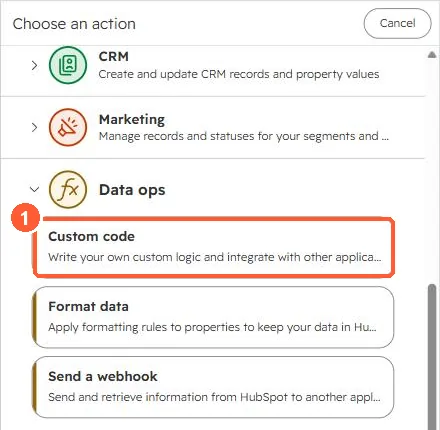

Short answer
HubSpot's developer docs: add the properties you need to the action definition instead of calling the API for them. After the workflow runs, the action's log output shows in the workflow's action logs. For rate limit errors you want retried, throw the error in the catch block in Node.js (or raise it in Python's except block). A swallowed error looks like success.
1. Find the action
The Data ops group in the action picker.


2. Common causes
- A property comes back
undefined: it isn't in the action's property inputs. - Nothing happens on error: the code caught the error and returned normally.
- Too many API calls: set the action's rate limit, which also slows the actions after it.
3. Related
Custom code action basics and API rate limits.